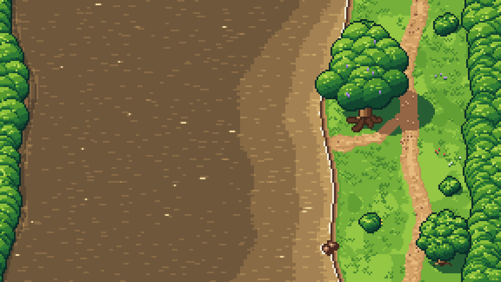
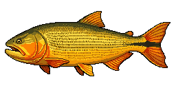
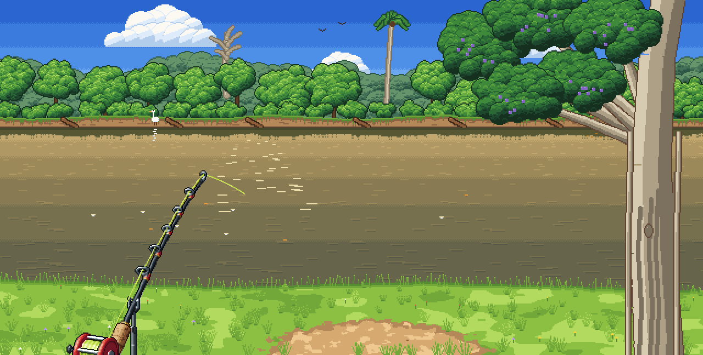
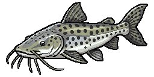
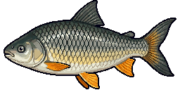
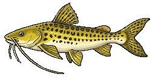
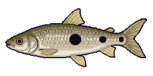
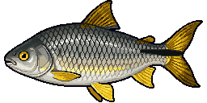

O rio, de cima
Ande pela margem até uma estaca de pesca. Escolha vara, equipamento e isca, mire e segure Espaço para carregar o arremesso.

BRAZILIAN FISHINGPesca de barranco nos rios do Brasil. Ande pela margem, jogue a isca, espere a pegada e brigue com o dourado.
Gratuito · Windows · Versão Alpha em desenvolvimento
COMO É
Cada momento da pescaria tem a sua câmera. O jogo troca de visão sozinho, do jeito que acontece na beira do rio.

Ande pela margem até uma estaca de pesca. Escolha vara, equipamento e isca, mire e segure Espaço para carregar o arremesso.

Olho no rio, vara na mão. Beliscadas, vara dobrando, garça passando. Fisgar na hora errada assusta o peixe.
Fisgou! A linha branca vai até a sombra do peixe. Recolha, solte fricção, aguente as corridas e leve ele até o passaguá.
FAUNA
Do lambari ladrão de isca ao surubim de 40 kg que esvazia o carretel. Passe o mouse e veja eles se mexerem.
AO VIVO
Esta é a briga do jogo rodando aqui, com a mesma arte: o dourado corre, se sacode, salta e cansa até chegar no barranco.
MECÂNICAS
Manivela, marchas e fricção que mudam a briga. Aperte demais e a linha estoura; frouxo demais e o peixe leva tudo.
Minhoca, milho, lambari, massa, fígado, tuvira... Cada isca interessa a espécies diferentes.
Finque os suportes no barranco e deixe três varas na água, cada uma com o seu equipamento e a sua isca.
Ele vira em curva, descansa, dispara numa corrida e cansa conforme o peso e a força que você faz.
O dourado salta para soltar o anzol. Linha frouxa no salto reto é perigo na certa.
Com o peixe cansado perto do barranco, pegue o passaguá e conduza ele até a rede.
ONDE
O primeiro rio do jogo, de água barrenta e margem alta. Três spots, cada um com seus peixes.
Fundo logo perto da margem. O melhor lugar do surubim.


Raso colado no barranco e canal fundo lá longe. Tem de tudo.


Raso e comprido. Bom para começar e pegar lambari.

JOGUE AGORA
Baixe e extraia o arquivo .zip.
Abra o Brazilian-Fishing.exe.
Se o Windows avisar, clique em Mais informações e depois em Executar assim mesmo. É normal em jogos novos, ainda sem assinatura.
Aperte F11 para tela cheia e boa pescaria!
Isto é uma versão Alpha: pode ter bugs e coisas faltando. Se achar algum problema, conte pra gente.